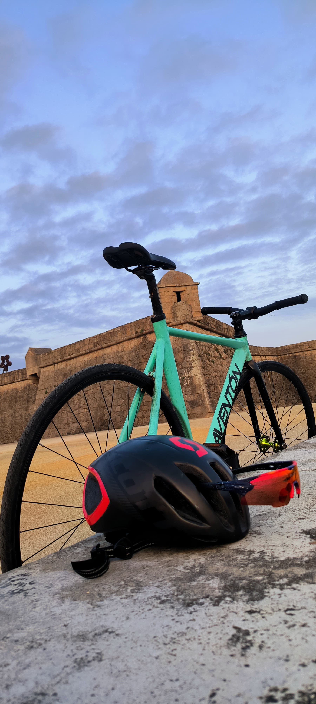
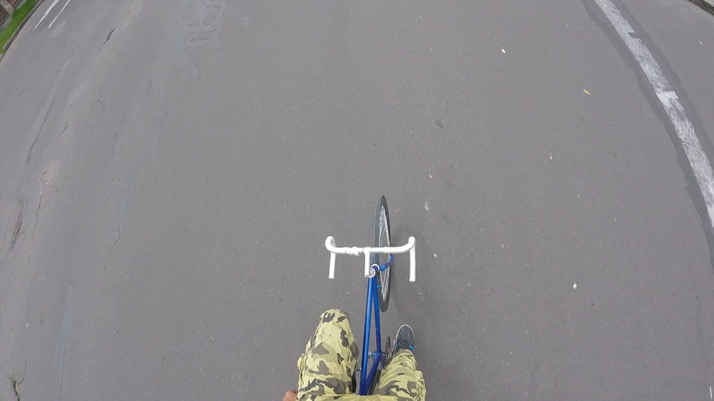
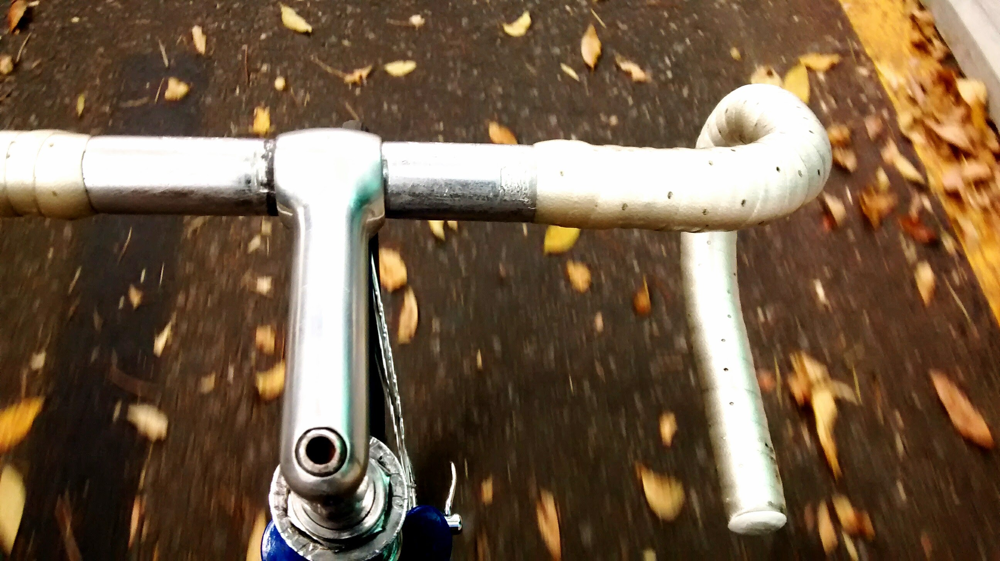
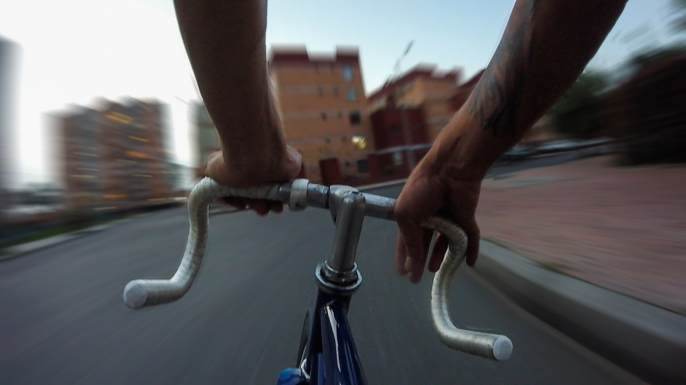

La vida hay que llevarla como bicicleta de pista... Sin frenos pero con casco.
Bienvenidos a la comunidad PedalSoul
Un espacio para los amantes del ciclismo urbano, aventura y libertad. Comparte tus rutas, fotos, video y experiencias.
Videoclips de la comunidad
¿Te gustaria ver tu video en esta galeria?
Puedes enviar tu video y, si cumple con los criterios de calidad y contenido de nuestro equipo de revision, lo publicaremos en esta seccion para que toda la comunidad lo disfrute. Si te interesa formar parte de nuestros colaboradores destacados, te invitamos a crear un perfil en nuestra plataforma. Desde ahi podras subir tu propio contenido, conectar con otros creadores y ganar visibilidad dentro de la comunidad. Recuerda que todos los videos recomendados por la pagina, incluidos los destacados, deben pasar primero por un proceso de seleccion. Esto nos permite asegurar que el contenido refleje los valores y el espiritu del proyecto. Animate a participar y comparte tu forma de ver el mundo sobre ruedas.
Descripción del video.
Galería fotográfica



